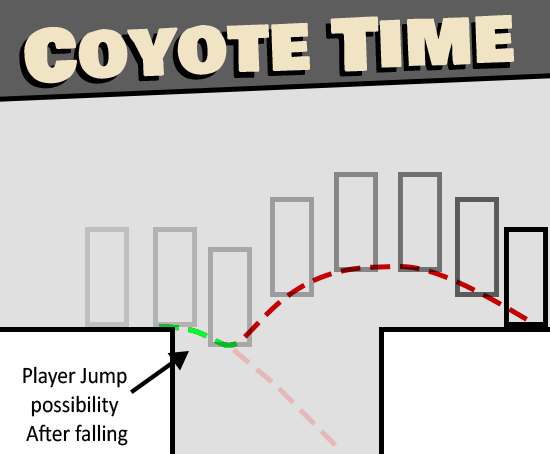
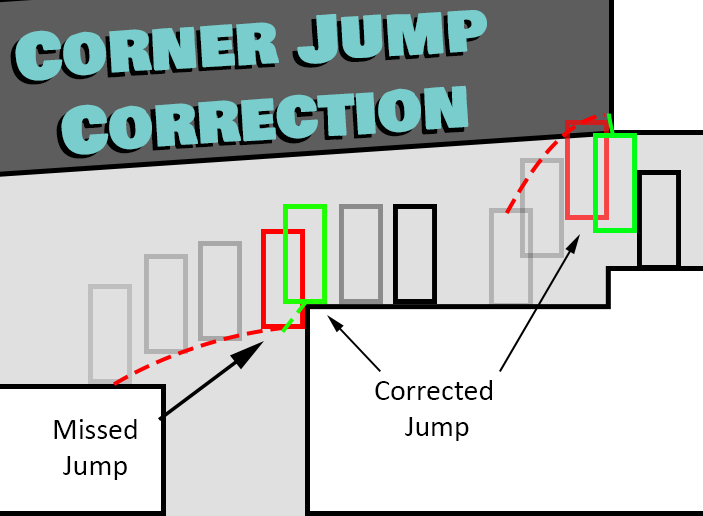
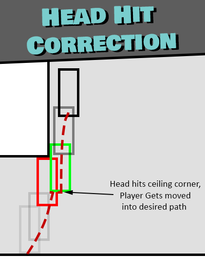
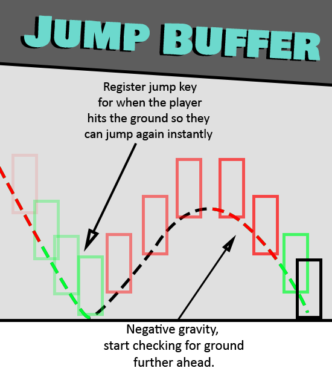
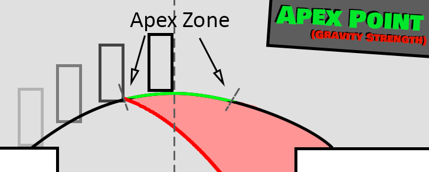
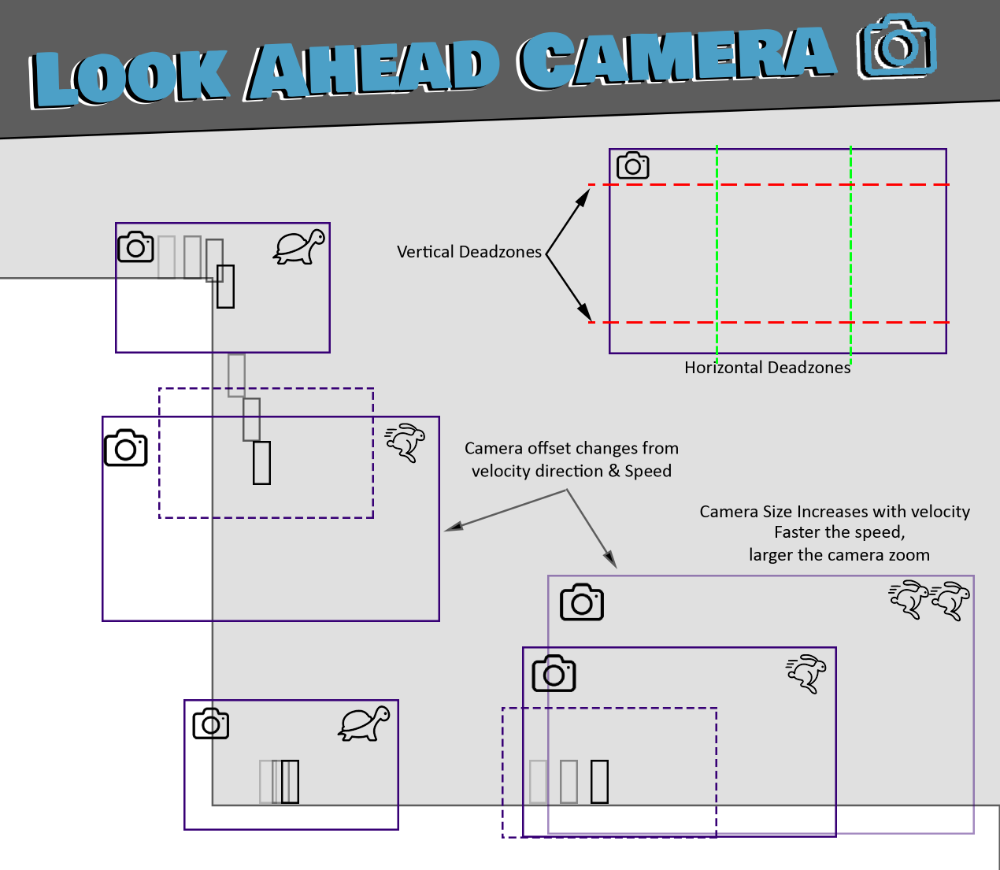

Intro to Mechanics Design
Unity Programming Module — 2nd Year
Intro to Mechanics Design is a 2nd Year module at Staffordshire University focused on creating mechanics that "feel good" through audio, visuals, and player forgiveness systems. I built a 2D character controller with a range of forgiveness mechanics to help the player navigate the map. The full IMD playlist is available on my YouTube channel.
Team Size
My Role
Tech Stack
Grade
Context
Video Playlist
Character Movement Designs
Below are the design diagrams I created for the assessment forum to explain each movement mechanic.




Coyote Time — Being able to jump just after walking off a ledge. This prevents the need for pixel-perfect inputs when jumping from ledge edges.
Corner Corrections — Correcting the player's position if a small percentage (a few pixels) clips a corner, so the intended path is still taken.
Jump Buffer — Pressing jump just before landing stores the input. If the input is stored when the player lands, they jump immediately. This makes for more fluid controls.

Apex Zone
The Apex Zone is the section at the peak of the jump where the player has increased control over air movement, allowing for more precision. This is useful in precision platformers such as Celeste or Super Meat Boy. Allowing the player to make precise jumps even in less demanding platformers (such as the Mario games) helps prevent less skilled players from getting frustrated when they miss jumps.
Look-Ahead Camera

Project Links